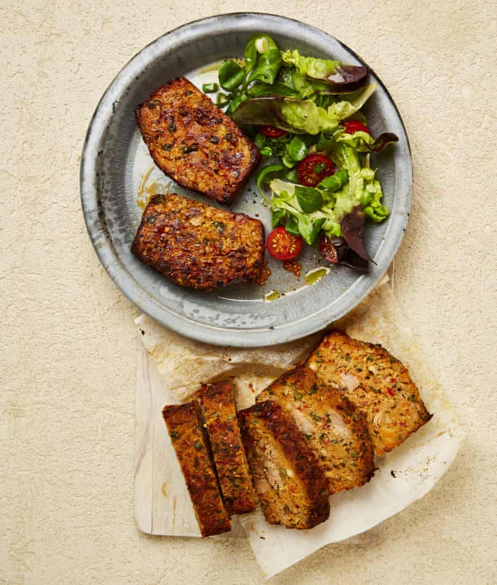

Tuna meatloaf

Serve slices of this tuna loaf with a salad or, even better, stuff them into sandwiches. For a picnic in the park, fry and cool the slices before transporting, but if you’re serving them at a garden picnic at home, set up a DIY sandwich station with a selection of filings, and let everyone create their own sandwich.
Heat the oven to 220C (200C fan)/425F/gas 7, and grease and line a standard 9cm x 24cm loaf tin.
Put the tomatoes, onion, garlic, parmesan, tomato paste, mayonnaise, mustard, cumin, paprika, chilli flakes, eggs, bread, half a teaspoon of salt and plenty of pepper in a food processor, then pulse to a rough, wet paste.
Scrape the mixture into a large bowl, add the tuna, capers, basil and two tablespoons of the reserved tuna oil, then fold to combine. Spoon this into the lined tin, and mould the top into a loaf shape. Brush the top of the loaf with a tablespoon of the reserved tuna oil.
Bake for 45 minutes, basting the loaf with a bit more tuna oil after 15 and 30 minutes,then remove and leave to cool for 15 minutes. Unmould the loaf, transfer it to a rack and leave to cool completely for about two and a half hours. Once cooled, carefully cut the loaf into 2½cm-thick slices and brush both sides of each slice with some of the remaining tuna oil.
Heat a large, non-stick frying pan on a medium-high heat. Once hot, fry the slices, in batches if need be, for two minutes on each side, or until they have a nice golden crust. Serve with salad or in a sandwich.